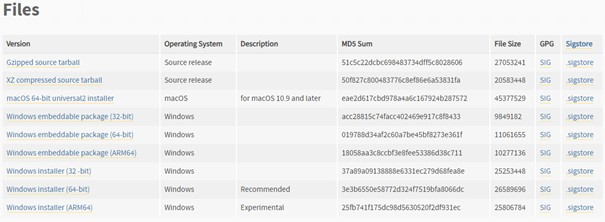
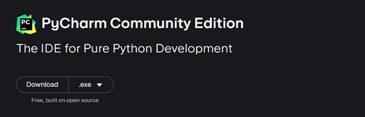

Pierwsze Kroki w Pythonie: Instalacja i Konfiguracja
Aby rozpocząć swoją przygodę z pisaniem kodu w języku Python, potrzebne jest nam narzędzie do edycji oraz interpretacji kodu.
Możliwości mamy kilka:
- Referencyjny interpreter Pythona, który znajdziemy na oficjalnej stronie https://www.python.org.
Pobieramy najnowszą dostępną wersję odpowiednią do naszego urządzenia.
Klikamy Download Python 3.12.1 (na moment pisania kursu). Zostaniemy przeniesieni na stronę opisującą daną wersję.
Na dole strony znajduje się nagłówek Files a pod nim tabela z różnymi dostępnymi wersjami – wybieramy odpowiednią do naszego systemu.
(w tym przypadku Windows installer 64-bit)

Otwieramy pobrany plik i przechodzimy przez proces instalacji.
- Opracowane dla języka Python PyCharm narzędzie programistyczne. Po wybraniu opcji Download ukaże nam się najpierw wersja Professional – dla developerów,
którą pomijamy, a pod nią Community Edition – idealną do nauki.

- Uniwersalne narzędzie programistyczne obsługujące język Python poprzez dodatki np.: Eclipse PyDev czy Visual Studio.
Podczas korzystania z tego drugiego, również wybieramy wersję Community.
Po ukończonym procesie instalacji w menu Start powinniśmy ujrzeć nowo dodane elementy. Aby rozpocząć programowanie w Python, wybieramy pierwszy – IDLE.